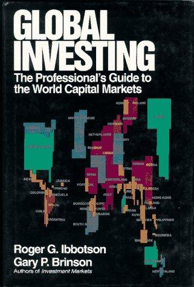

罗杰·伊博森（Roger G. Ibbotson）是耶鲁大学管理学院金融学荣休教授，伊博森咨询公司（Ibbotson Associates，后并入晨星公司）的创始人，因与雷克斯·辛克菲尔德（Rex Sinquefield）合作编制的SBBI（股票、债券、国库券与通胀）数据库而闻名于投资界。加里·布林森（Gary P. Brinson）是全球资产配置领域的先驱，创立了布林森合伙公司（Brinson Partners），1994年被瑞士银行（UBS前身）以7.5亿美元收购，此后他担任瑞银全球资产管理首席投资官，管理规模近万亿美元。1999年，布林森获得CFA协会杰出专业贡献奖——与博格尔和巴菲特同一荣誉。《全球投资》出版于1993年，由麦格劳-希尔出版。
本书是一部面向专业投资者的全球资本市场百科全书。两位作者以其获奖级别的研究成果为基础，系统梳理了全球四十多个国家和地区的股票、债券、现金、房地产、黄金白银、大宗商品、期权和期货的历史回报数据，其中许多数据在当时任何其他单一出版物中都无法找到。全书涵盖"极长周期的股票回报"等章节，将投资视野从数十年拓展到数百年，展示了不同资产类别在不同历史阶段的表现。书中还分析了世界人口、经济活动、资本市场规模、货币供应、通货膨胀和汇率之间的相互关系，并提供了一套基于均衡回报分析的全球多元化投资组合构建框架。对1986至1987年牛市、随后的崩盘以及欧洲和太平洋地区市场发展的分析，使本书兼具历史深度和实际操作价值。
威廉·伯恩斯坦在"高效前沿"推荐书单中推荐此书，特别提到其"跨越数个世纪的可投资资产历史视角"。作为一部专业参考书，《全球投资》的读者对象主要是机构投资者、资产配置研究者和对全球市场历史有浓厚兴趣的投资人。它的核心信息是：投资者应当以全球视野思考，理解世界范围内所有可投资资产的全貌，用历史证据和定量分析指导投资组合的构建——而非将视野局限于本国市场。对于希望建立全面资本市场知识体系的读者，这部数据详实、视野宏阔的著作至今仍具重要参考价值。